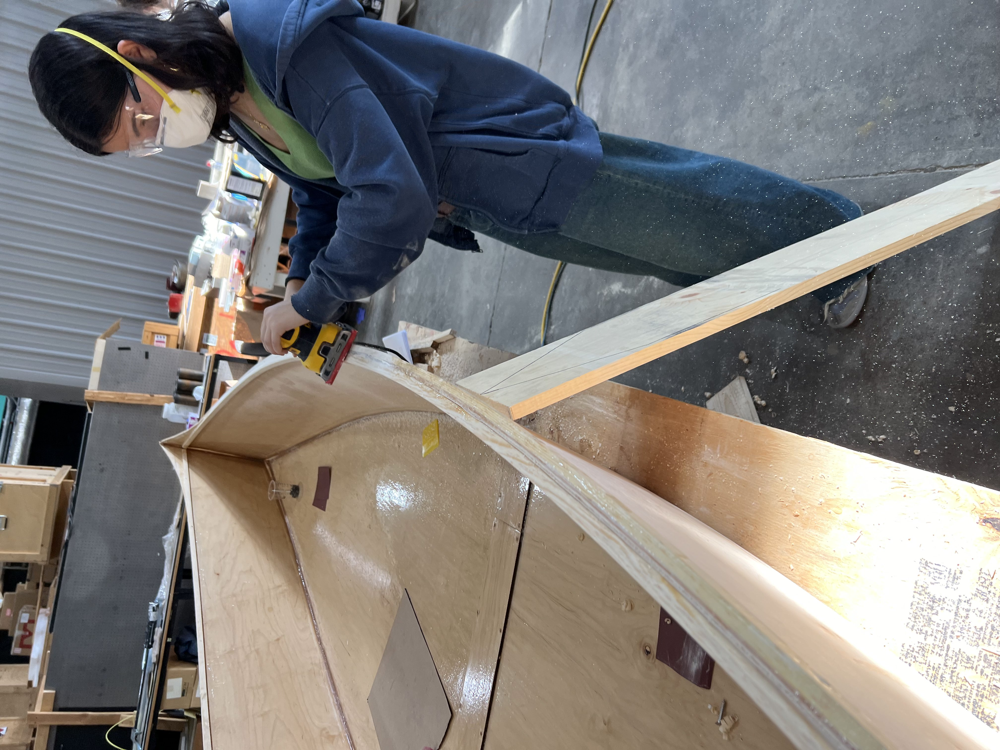
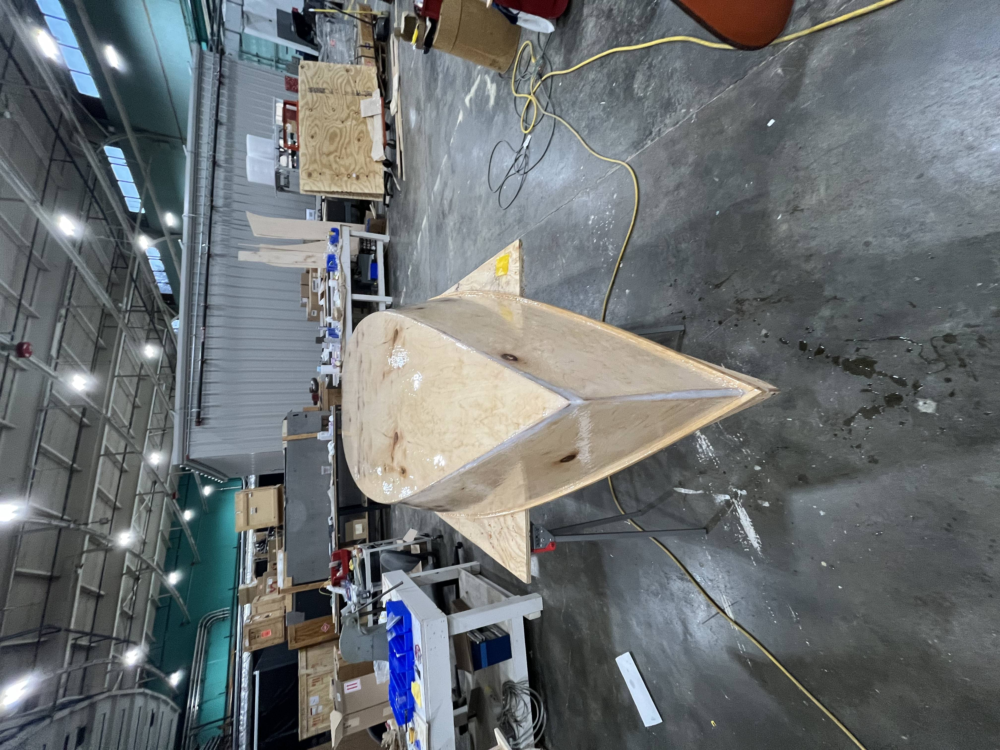

<div class="textcontainer"> <br></br> <h3>Week 11: Finishing Touches Pt2</h3> <p class = "margin"></p> This week, we flipped the boat over, and removed the rest of the tape. We gave our boat a good sand, especially around the gunwales. We also put on a nice coat of glossy epoxy over the bottom and outside sides of the boat. All holes were also filled with epoxy. We also started making temporary benches to place in our boat to mark relatively where we want the seats and how low we want them to be placed. <p class = "margin"></p> <style> img { display: block; margin-left: auto; margin-right: auto; } </style>   </div>